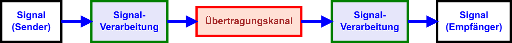
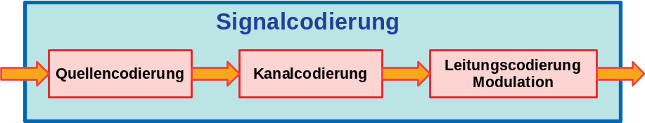

Signalübertragung
Die Signal-Übertragungskette
Die Signal-Übertragungskette beschreibt die grundsätzliche Struktur der Übertragung eines Signals vom Sender zum Empfänger.

Signalübertragungskette
Man kann die gesamte Signal-Übertragungskette in 5 Blöcke unterteilen:
- Die Signalerzeugung beim Sender
- Die Signalverarbeitung beim Sender
- Den Übertragungskanal
- Die Signalverarbeitung beim Empfänger
- Die Signalerzeugung beim Empfänger
Logikpegel
Im einfachsten Fall besteht ein digitales Signal aus zwei Zuständen: 0 und 1. Diesen beiden Zuständen werden Logikpegel zugeordnet.
In elektrischen Schaltungen werden die Logikpegel üblicherweise durch verschiedene Spannungen oder Spannungsbereiche repräsentiert.
Logikpegel lassen sich aber auch anderen physikalischen Größen wie z.B. Schalldruck, Lichtstrom oder Frequenzen zuordnen.
Signalverarbeitung
Ein Signal muss vor der Übertragung zuerst verarbeitet werden. Es muss der Übertragungsstrecke und deren Eigenschaften angepasst werden. Nach dem Empfang muss das Signal wieder zurückgewonnen werden.
A/D-Wandlung
Ein analoges Signal muss zunächst mit einem Analog-Digital-Wandler (A/D-Wandler oder ADC: engl. analog-to-digital-converter) in ein digitales Signal umgewandelt werden. Häufig nennt man diesen Vorgang auch digitalisieren. Das digitalisierte Signal kann dann weiterverarbeitet werden.
Die A/D-Wandlung ist wichtiger Schritt und ausschlaggebend für die Qualität des Signals. Bereits bei der A/D-Wandlung wird festgelegt mit welchen Fehlern bei der späteren Rekonstruktion des Originalsignals zu rechnen ist. Dabei gilt es immer einen Mittelweg zwischen geringer Datenrate und Signalqualität zu finden.
Signalcodierung
Das digitale Signal muss vor der Übertragung in eine passende Form gebracht werden. Diesen Vorgang bezeichnet man als Signalcodierung oder Codierung. Die Codierung kann in drei Stufen eingeteilt werden:
|
 |
Quellencodierung
Quellencodierung: Der Datenstrom des digitalisierten Signals muss zunächst in eine Form gebracht werden, die beim Empfänger eine eindeutige Rekonstruktion in der gewünschten Qualität zulässt.
Nicht immer müssen die von der Quelle gelieferten Daten beim Empfänger 1:1 wieder rekonstruiert werden. Bei Audio- und Videosignalen erfolgt vor der Übertragung in den meisten Fällen eine verlustbehaftete Komprimierung (oder Kompression) der Daten. Ein Teil der Rohdaten wird bei der verlustbehafteten Komprimierung verworfen, was zu einer (deutlich) keineren Datenmenge führt, die übertragen werden muss. Die Stärke der Kompression (Kompressionsrate), d.h. das Maß der Verkleinerung des Datenstroms, hängt dabei von der gewünschten Übertragungsqualität beim Empfänger ab. Moderne mathematische Kompressionsverfahren erlauben enorme Kompressionsraten bei moderatem Qualitätsverlust. Bekannte Kompressionsverfahren für Video und Audio sind z.B. MPEG, JPEG oder MP3.
Sollen Daten übertragen werden, kommt nur die verlustfreie Komprimierung in Frage, da die Daten beim Empfänger natürlich 1:1 rekonstruiert werden müssen. Ein bekanntes Kompressionsverfahren für Daten ist beispielsweise die ZIP-Komprimierung.
Kanalcodierung
Kanalcodierung: Bevor das quellencodierte Signal auf die Reise geschickt wird, muss es an die besonderen Eigenschaften des verlustbehafteten Übertragungskanals angepasst werden. Dazu fügt man dem Signal zusätzliche Daten (Redundanz) hinzu, die später eine Fehlererkennung oder sogar eine Fehlerkorrektur zulassen.
Leitungscodierung
Leitungscodierung: Das
kanalcodierte Signal muss noch an die physikalischen Eigenschaften des Übertragungskanals
angepasst werden.
Hier wird festgelegt, wie das Signal mit Hilfe des zur Übertragung zur Verfügung stehenden
physikalischen Mediums, z.B. Licht, Spannung, EM-Welle, übertragen wird.
Bei der Basisbandübertragung wird das Signal im gleichen
Frequenzbereich (ohne Modulation) übertragen. Eine gewisse Frequenzanpassung lässt sich durch
eine geeignete Leitungscodierung erreichen. Jedoch sind nur wenige Übertragungsmedien für die
Basisbandübertragung geeignet, z.B. TP-Leitungen in LANs.
Häufig muss das Frequenzspektrum des kanalcodierten Signals noch hin zu höheren Frequenzen
verschoben werden. Dies wird als Modulation bezeichnet.
Dabei bedient man sich häufig unterschiedlicher, angepasster Modulationsverfahren, die eine möglichst hohe
Datenrate auf dem Übertragungskanal zulassen.